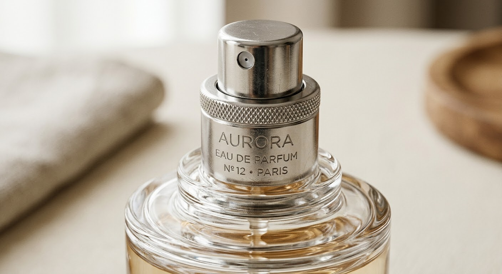
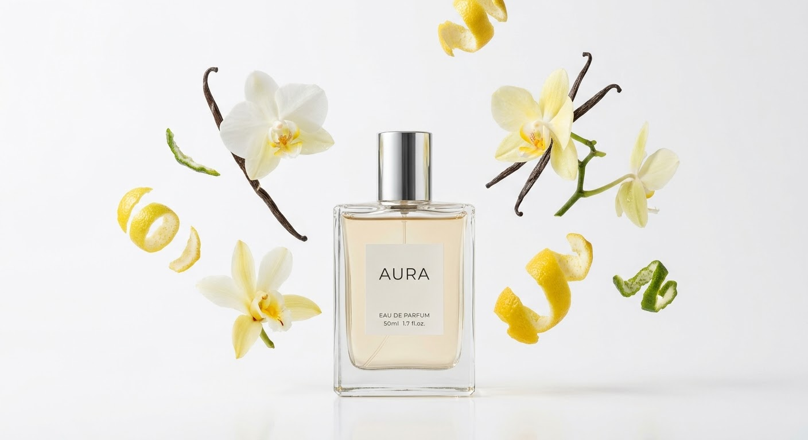
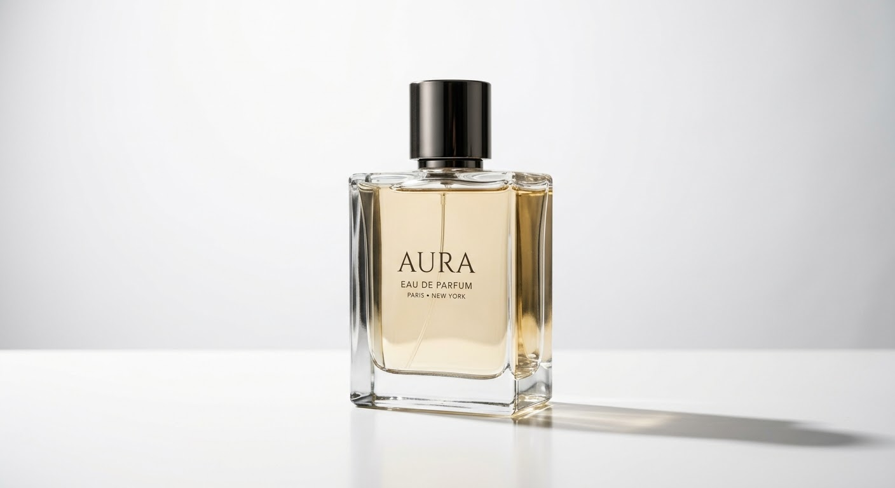

Notas de salida
Limón y lima.
Piel de cítricos recién cortada. Los primeros minutos son limpios y luminosos.

Eau de Parfum
Luz que se queda en la piel.
Vidrio macizo. Cincuenta mililitros.
Notas de salida
Piel de cítricos recién cortada. Los primeros minutos son limpios y luminosos.
Notas de corazón
Un floral suave que aparece cuando el cítrico se calma y da cuerpo a la fragancia.
Notas de fondo
Cálida y seca, sin azúcar. Es lo que queda en la ropa al final del día.
El atomizador
Anillo moleteado y una bruma fina y uniforme en cada pulsación.


Vainas curadas lentamente para un fondo cálido y seco.
El corazón floral, blanco y cremoso.
Limón y lima prensados en frío para la salida.
